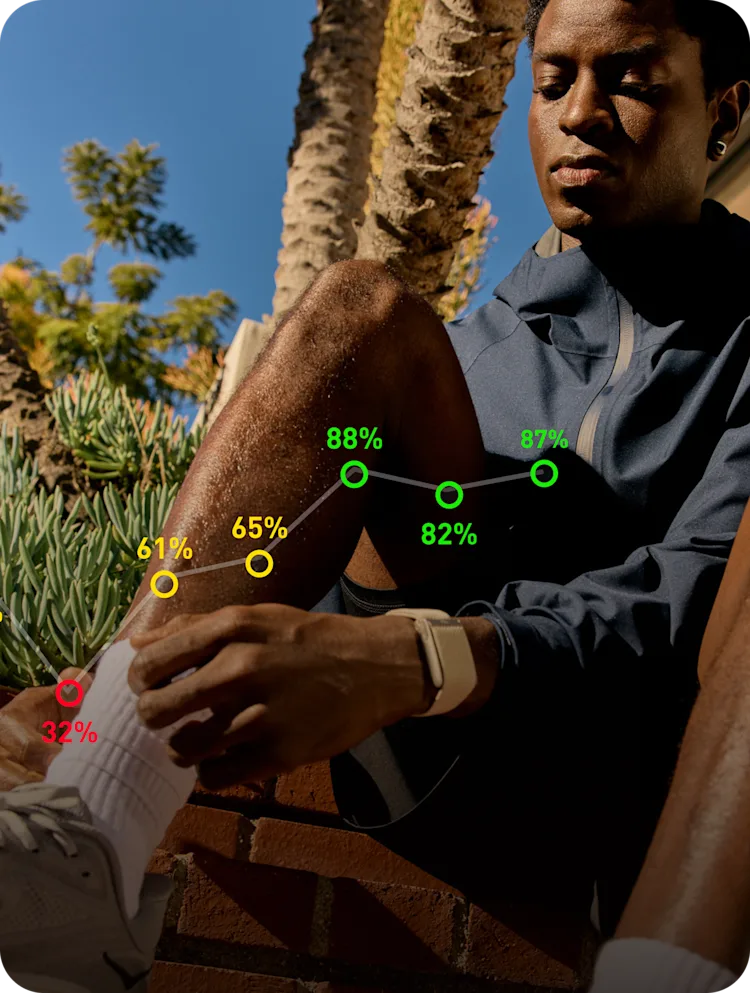

Role Simulation Portfolio
Showing the work behind performance creative.
I built this as a focused creative walkthrough to show how I approach lifecycle email, paid media, responsive design, testing logic, conversion improvements, scalable systems, and brand storytelling within a performance-driven environment.
Creative premise
Translate body data into action, habit, and membership value.
01 / Lifecycle Email Lab
Email campaigns inside a real inbox experience.
I’m presenting the email work in the way a user would actually experience it: scanning subject lines, opening a message, reading the campaign, and clicking into the membership path.
Campaign logic
A strong lifecycle email is more than a designed message. The subject line, preview text, opened-email hierarchy, CTA placement, and destination page should all work together as one connected conversion path.
W
WHOOP Performance Lab
Your body has been trying to tell you something.
To: Candidate Review Team · Campaign simulationDaily Readiness
Turn body signals into better decisions.
Your body is constantly responding to training, sleep, stress, illness, and daily habits. WHOOP helps translate those signals into a simple question: what are you ready for today?

Campaign Hook
82%
Recovery becomes a clear readiness signal.
Why this approach works
This is an acquisition email. The goal is to create curiosity without overwhelming the user with features.
Creative strategy
This email is built to acquire users by making biometric tracking feel simple, useful, and personal.
Mobile inbox view
Same campaign, phone-first behavior.
Inbox
Today
Your body has been trying to tell you something.
WHOOP Performance Lab
Daily Readiness
Turn body signals into better decisions.
Your body is constantly responding to training, sleep, stress, illness, and daily habits.
Campaign Hook
82%
Join Now
Recovery becomes a clear readiness signal.
02 / Paid Media Lab
Same message, different attention span.
I’m showing how the same campaign thinking adapts between mobile feed behavior and desktop display placement. The mobile version prioritizes speed and emotional clarity, while the desktop version gives the message more room for proof and context.
Campaign logic
Different campaign objectives require different creative tensions, messaging depth, and conversion behaviors. The system is designed to support acquisition, retention, upsell, and membership conversion while keeping the brand language cohesive across touchpoints.
Desktop Display
Know when to push. Know when to recover.
A wider ad format that gives the message more room to breathe.
Testing hypothesis
This angle simplifies complex body data into one useful daily question.
03 / Before and After Lab
A weaker campaign rebuilt for performance.
I’m comparing a visually solid campaign against a version that is more focused on clarity, messaging, and conversion. The updated direction simplifies the experience and creates a stronger path to action.
Before Campaign
Track more. Train better. Sleep better.
Get insights into your body with sleep, strain, recovery, coaching, health, stress, heart rate, and performance features.
- Problem: Too many benefits compete for attention.
- Problem: No single reason to click right now.
- Problem: Product features are listed instead of translated into user value.
- Problem: CTA is generic and not connected to the message.
After Campaign
What is your body ready for today?
Recovery, sleep, and strain become one simple daily decision: push, maintain, or recover.
Today’s Readiness
82%
Your body is ready for higher output.
- Resolved: One clear hook replaces a feature dump.
- Resolved: Metric creates proof and urgency.
- Resolved: User benefit is immediate and easy to understand.
- Resolved: CTA leads naturally into a plan or app action.
04 / Designer Note
About Abdourahmane Doumbouya.
I’m a multidisciplinary designer with over 15 years of experience across advertising, branding, digital marketing, web experiences, and performance-focused creative systems. My work combines visual storytelling, conversion-focused design, responsive UX thinking, and scalable campaign development across modern digital platforms.
Performance-focused digital designer & creative technologist.
I design responsive brand experiences, websites, campaign systems, and conversion-focused interfaces. My background sits between graphic design, UX, web, branding, and creative technology, which lets me think beyond a single asset and understand the full digital journey.
Why I built this portfolio this way.
I wanted this application to show more than a collection of finished visuals. For a role built around email, paid media, performance marketing, testing, and scalable design systems, I felt the strongest way to present myself was to build a working example of how I think.
My approach is to start with the user moment, define the business goal, simplify the message, design the asset in context, and then connect that asset to the next step in the journey. Whether the goal is acquisition, retention, upgrade, or conversion, I care about how the creative performs, not just how it looks.
I bring a hybrid design background that combines brand craft, responsive web thinking, fast iteration, AI-assisted exploration, and production-level attention to detail. I’m interested in WHOOP because the product sits at the intersection of data, behavior, performance, health, and lifestyle.
Contact